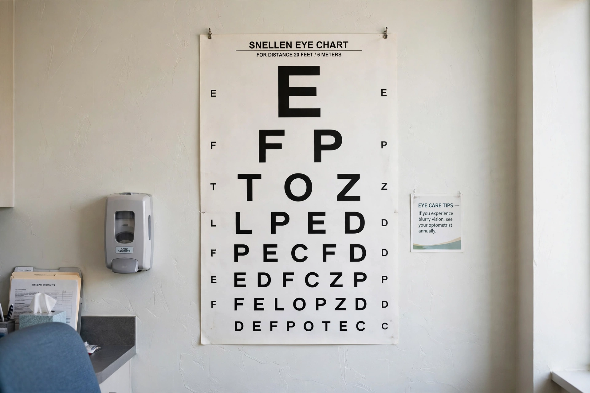

| Vision test | |
|---|---|
 | |
| Purpose | Measure visual acuity, refraction, colour vision, visual fields |
| Common tools | Snellen chart, Ishihara plates, phoropter, perimeter |
| Performed by | Optometrists, ophthalmologists, orthoptists |
A vision test (eye examination) is a series of tests performed to assess vision and the health of the eyes, usually by an optometrist or ophthalmologist. It measures how well a person sees at various distances, determines the need for corrective lenses, and screens for eye diseases such as glaucoma and cataract.
The best-known component is the measurement of visual acuity using an eye chart. The Snellen chart, devised by Herman Snellen in 1862, presents rows of letters (optotypes) of decreasing size read at a standard distance, conventionally 6 metres (20 feet). Results are expressed as a fraction such as 6/6 (20/20): the numerator is the test distance and the denominator the distance at which a normal eye can read that line. LogMAR charts, with equal steps between lines, are preferred in research and low-vision work.
Refraction determines the lens prescription needed to correct myopia (short sight), hyperopia (long sight), astigmatism and presbyopia. Objective refraction may use a retinoscope or autorefractor; subjective refraction refines the result with a phoropter, asking the patient to compare trial lenses ("better one, or two?").
Colour vision is screened with pseudoisochromatic plates such as the Ishihara test developed by Shinobu Ishihara, which detects red–green deficiencies including protanopia and deuteranopia. Other components include visual field testing (perimetry) to detect blind spots, tonometry to measure intraocular pressure, pupil and eye-movement assessment, slit-lamp examination of the front of the eye, and ophthalmoscopy or retinal imaging of the fundus.
Regular eye examinations are recommended at intervals depending on age and risk: children are screened in infancy and at school entry, adults typically every one to two years, and people with diabetes or a family history of glaucoma more often, since several sight-threatening diseases are asymptomatic in their early stages.
See also: Shinobu Ishihara · Protanopia · Deuteranopia